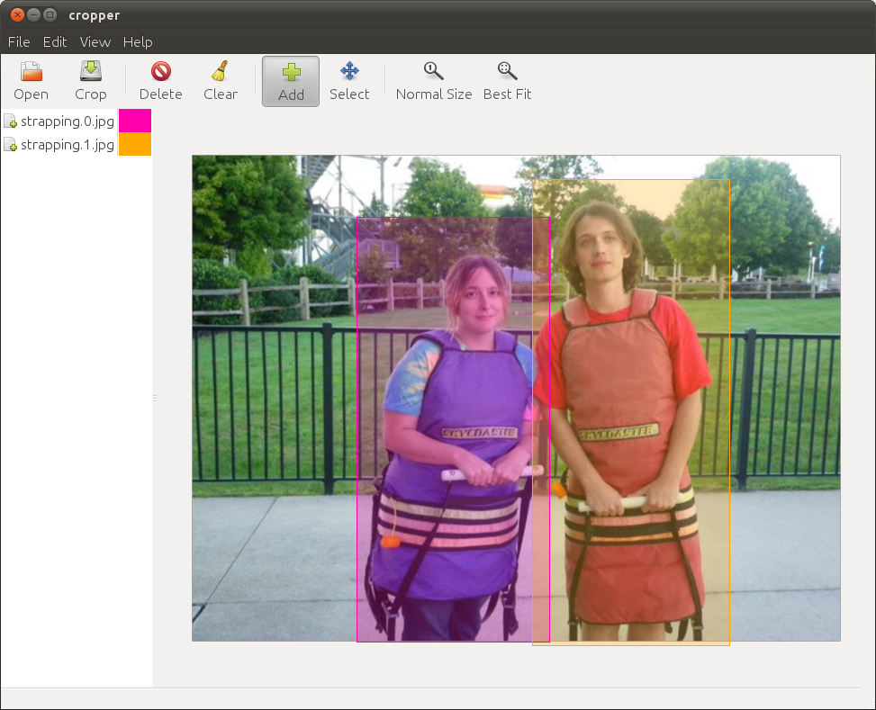

Cropper is a simple utility to crop images into several photos. It sports a simple point-and-click interface with just enough features to make it easy.
Download, run setup.py
Python, GTK, PyGTK, Python Imaging Library
You can download this project in either zip or tar formats.
You can also clone the project with Git by running:
$ git clone git://github.com/astronouth7303/cropper